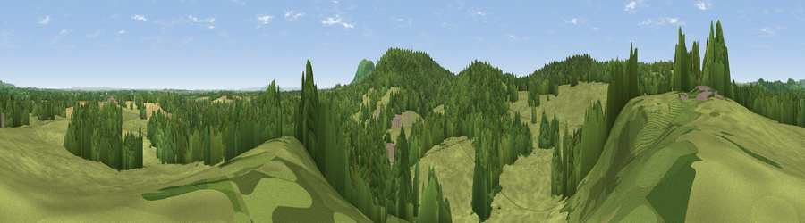

Viewpoint near Alfrick
#26403 in England · top 64% of its area beats it · near AlfrickWhere it is
The exact computed spot (SO 75075 52525). Click the marker for map links.
The view, rendered

A 360° render of this exact spot computed from the terrain model, tree cover and land cover — summer colours, afternoon light, calibrated against photographs of famous viewpoints. Real trees, hedges and buildings will differ in detail.
The panorama
Grey silhouette: terrain skyline in each direction (720 bearings, Earth curvature and refraction included). Dashed green: skyline with trees (+15 m) and buildings (+8 m) as obstacles. Blue strip: how far the ground is visible on each bearing.
Where the view opens
Wedge length = distance to the farthest visible ground on that bearing (vegetation-aware). Rings at 10, 25 and 50 km.
What fills the view
56% grassland · 38% woodland · 5% cropland · 1% built-up
Angular shares of the visible panorama (visual magnitude), not map area. Landscape diversity 0.39 (0–1 Shannon).
Key numbers
More beautiful places nearby
The staircase of upgrades: each row has a higher view potential than everything closer. Driving times are estimates from straight-line distance, calibrated against real road routing — check an actual route before setting out.
| Place | Direction | Drive | Score |
|---|---|---|---|
| Viewpoint near Brockamin | ENE · 1 km | ~4 min | 46.7 |
| Viewpoint near Storridge | S · 2 km | ~5 min | 70.5 |
| Viewpoint near Storridge | S · 2 km | ~5 min | 73.5 |
| Viewpoint near West Malvern | SSE · 6 km | ~12 min | 81.4 |
| North Hill | SSE · 6 km | ~14 min | 86.8 |
| Worcestershire Beacon | SSE · 8 km | ~15 min | 87.1 |
| Viewpoint near West Quantoxhead | SSW · 127 km | ~151 min | 87.9 |
| Viewpoint near West Quantoxhead | SSW · 127 km | ~151 min | 88.7 |
52.17042, -2.36586 · source: screening · position refined by local search. Computed location — check access rights before visiting.